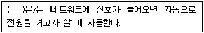
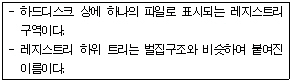
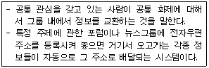
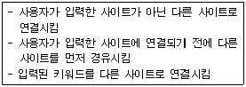
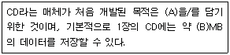
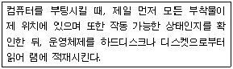
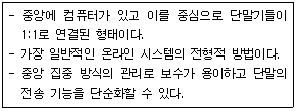

PC정비사-2급 (2008-04-27 기출문제)
1과목: PC유지보수
1. PC 조립에 대한 설명 중 잘못된 것은?
- Power Supply는 큰 냉각팬이 돌아가기 때문에 단단히 고정하지 않으면 진동으로 인해 냉각팬 돌아가는 소리가 크게 들린다.
- 메인보드의 Power S/W와 Reset S/W는 극성이 없으므로 연결커넥터는 사용자가 마음대로 연결해도 무방하다.
- 시리얼 ATA 방식의 하드디스크를 연결할 때는 점퍼 설정을 해야 한다.
- CPU나 하드디스크는 동작 중 열이 많이 발생하므로, 본체의 발열이 원활하도록 조립한다.
(정답률: 49%)

2. PC를 조립한 후 상태 확인 및 점검을 위해 해야 할 사항으로 잘못된 것은?
- 모니터 화면에 POST 부트 메시지를 확인하여 RAM이나 하드디스크의 설치 상태가 이상이 없음을 확인한다.
- 키보드와 마우스는 본체에 연결한 후 전원과 동작에 이상이 없는지 확인한다.
- 프린터의 동작 상태를 확인하기 위해서는 반드시 PC부팅 전에 프린터의 전원을 켜야 한다.
- 스피커를 켜고 소리가 제대로 들리는지 확인한다.
(정답률: 79%)
3. Award BIOS의 Power Management Setup의 특정 메뉴에 대한 설명이다. 빈 칸에 들어갈 메뉴는?

- Modem Use IRQ
- Restore AC/Power Loss
- Power Up
- Wake On LAN
(정답률: 60%)
4. 컴퓨터 전원을 켜면 컴퓨터의 이상 유무를 점검하기 위한 POST(Power On Self Test)가 진행되면서 여러 가지 정보가 모니터 화면에 나타난다. 다음 중 POST 과정에서 나타나는 정보가 아닌 것은?
- CPU 동작 클럭
- 시스템 메모리의 용량
- BIOS 정보
- 운영 체제 버전
(정답률: 80%)
5. PnP(Plug & Play)를 최초로 지원하기 시작한 운영체제는?
- Windows 3.1
- Windows 95
- Windows ME
- Windows 2000
(정답률: 60%)
6. Standard CMOS Setup에서 Halt On에 대한 설명으로 올바른 것은?
- All, But Keyboard - 키보드 오류에 대해서만 POST를 멈추지 않는다.
- All Errors - 어떤 에러가 발생해도 POST를 계속 진행한다.
- No Errors - 바이오스가 비치명적인 에러 검출 시 POST를 중지하고 알려준다.
- No, But Keyboard - 키보드 오류에 대해서만 POST를 멈추지 않는다.
(정답률: 63%)
7. P-ATA 포트 2개와 S-ATA 포트 4개를 지원하는 메인보드에 연결할 수 있는 HDD의 최대 개수는? (단, 메인보드의 기본적인 하드디스크 연결 포트 외에 USB나 기타 하드디스크를 장착할 수 있는 장치를 사용하지 않는다.)
- 5개
- 6개
- 8개
- 10개
(정답률: 67%)
8. 오디오 채널에 대한 설명 중 잘못된 것은?
- 5.1채널에서 센터, 전방좌우, 후방좌우는 각각 1채널을 갖는다.
- 5.1채널에서 서브우퍼는 저음신호를 담당하며 0.1채널을 갖는다.
- 외부 앰프가 필요한 서브우퍼를 액티브 서브우퍼라 부른다.
- 최근 6.1채널, 7.1채널까지 확장된 규격이 출시되고 있다.
(정답률: 62%)
9. 업데이트된 드라이버를 설치했더니 시스템이 불안해지고 심지어 Windows XP로 부팅조차 되지 않는다. 문제를 해결하기 위한 방법으로 가장 적합하지 않은 것은?
- 마지막으로 성공한 구성으로 부팅하여 본다.
- 드라이버 롤백 작업을 진행한다.
- BIOS 설정에서 부팅 순서를 변경한다.
- 시스템 복원을 실행한다.
(정답률: 64%)
10. 전자파에 관련된 인증 마크가 아닌 것은?
- EMI
- FCC
- CE
- KGMP
(정답률: 57%)
11. 하드디스크 파티션에 대한 설명으로 잘못된 것은?
- 파티션을 지우고 새로 생성한 경우, 재부팅하면 설정 변경 사항이 반영된다.
- 파티션을 수행하기 위해서는 우선 포맷을 통해 하드디스크를 초기화해야 한다.
- 파티션 매직 등의 프로그램을 이용하여 윈도우 환경에서 포맷 없이 파티션을 합치거나 조정할 수 있다.
- 3개 이상의 파티션을 잡을 경우, 먼저 Primary로 잡은 다음, 남은 영역을 모두 Extended로 잡고, 다시 Logical로 나눈다.
(정답률: 54%)
12. Windows XP 기본 Program 내에서 NTFS 파일 시스템을 FAT32 파일 시스템으로 변환하는 방법으로 올바른 것은?
- convert 명령어를 사용해 FAT32 파일 시스템으로 변환한다.
- "format 드라이브명 /fs:fat32" 을 사용하여 드라이브를 다시 포맷한다.
- NTFS 파일 시스템을 사용하는 파티션부터 삭제한다.
- "del 드라이브명 /ntfs" 명령을 사용하여 NTFS 파일 시스템을 삭제한다.
(정답률: 41%)
13. CD 레코딩 작업 중 발생되는 “Buffer Under Run” 에러의 해결책으로 잘못된 것은?
- 레코딩 작업 중 다른 작업을 병행하지 않는다.
- 레코딩 기록 속도는 낮춰준다.
- 이미지 파일을 만들어 레코딩 작업을 한다.
- 하드디스크의 빈 공간을 확보한다.
(정답률: 57%)
14. 마우스의 인터페이스를 보면 최근에는 PS/2나 USB이지만 이전에는 Serial 포트를 인터페이스로 사용하였다. Serial 포트를 사용할 경우 컴퓨터 내부의 어떤 장치와 IRQ의 충돌이 일어날 수 있는가?
- SCSI Card
- VAG Card
- MODEM
- FDD
(정답률: 38%)
15. 펜티엄4에 적용된 기술로, 하나의 프로세서가 두 개의 논리적 프로세서처럼 작동하도록 하는 기술은?
- 하이퍼 트랜스포트
- 하이퍼 스레딩
- 멀티 태스킹
- 넷 버스트
(정답률: 63%)
2과목: PC운영체제
16. 여러 개의 작업을 하나로 묶어 일정시점에 이 작업들을 한꺼번에 처리하는 운영체제 방식은?
- Job by Job방식
- 실시간 시스템
- 일괄처리 방식
- 다중 프로그래밍 방식
(정답률: 91%)
17. 하드웨어와 응용 프로그램간의 인터페이스 역할을 하면서 CPU, 주기억장치, 입출력장치 등의 컴퓨터 자원을 관리하고, 인간과 컴퓨터간의 상호작용을 제공하는 소프트웨어는?
- Shareware
- Middleware
- Operating System
- Protocol
(정답률: 55%)
18. 소프트웨어 개발 회사에서 새로운 소프트웨어를 개발하여 시장 출시 전에 제품에 대한 문제점이나 의견 수렴을 위해 "소프트웨어의 전체 기능을 일반 사용자에게 무료로 일정 기간 사용하도록 하는 것"을 나타내는 것은?
- Freeware
- Demo Version S/W
- Beta Version S/W
- Shareware
(정답률: 59%)
19. Windows XP에서 삭제한 파일을 잠시 보관해 두는 휴지통이 있다. 하지만 휴지통에 보관하지 않고 곧바로 삭제하려고 할 때, 키의 조합은?
- Tab + Del
- Shift + Del
- Alt + Del
- Ctrl + Del
(정답률: 84%)
20. Windows XP를 설치하는 방법으로 잘못된 것은?
- 설치할 하드디스크가 포맷이 되어있지 않을 경우 Windows XP 설치 중에는 포맷을 할 수 없으므로 설치 전 FDISK를 이용하여 포맷한다.
- 하드디스크에 Windows 98/Me 등의 Windows가 이미 설치되어 있다면 Windows에서 바로 업그레이드 할 수 있다.
- 하드디스크에 Windows가 설치되어 있지 않다면 Windows XP 설치 CD로 부팅한 뒤 설치해야 한다.
- Windows에서 설치할 때 만약 설치 프로그램이 자동으로 실행되지 않으면 탐색기를 실행해 CD-ROM 드라이브를 열어 “Setup.exe”를 더블 클릭한다.
(정답률: 58%)
21. 바탕화면의 휴지통을 이용하여 파일을 복원할 수 있는 경우는?(단, 휴지통 비우기는 사용하지 않았으며, 지워진 파일이 들어갈 만큼 휴지통 크기는 넉넉하다고 가정한다.)
- 플로피디스크상의 파일을 삭제한 경우
- 네트워크 드라이브상의 파일을 삭제한 경우
- 같은 디렉터리의 동일한 이름을 가진 파일을 두 번 이상 삭제 한 후, 처음 삭제한 파일을 복원할 경우
- 같은 이름의 파일을 복사/이동 작업으로 덮어써서 지운 경우
(정답률: 52%)
22. Windows XP를 설치하기 전 확인 사항으로 적절하지 못한 것은?
- 기존에 사용하고 있는 소프트웨어와의 호환 여부
- 바탕화면의 배경화면
- Windows XP를 운영하기 위한 하드웨어 사양
- 기존 하드웨어의 Windows XP 호환 여부
(정답률: 86%)
23. Windows XP에서 컴퓨터의 시스템, 프로그램, 보안 이벤트 로그를 표시하고 관리하는데 사용되는 관리 도구는?
- 구성 요소 서비스
- 성능
- 이벤트 뷰어
- 장치 관리자
(정답률: 77%)
24. 다음에서 설명하는 용어는?

- 허브
- 하이브
- 게이트웨이
- 네트워크
(정답률: 67%)
25. 인터넷 익스플로러에 나타나는 오류 메시지에 대한 설명 중 잘못된 것은?
- 서버를 찾을 수 없거나 DNS 오류입니다. - 인터넷 연결 환경이 잘못된 경우
- 403 Forbidden - 특별한 액세스 승인이 필요한 사이트인 경우
- Bad File Request - 특별한 프로그램 설치가 필요한 페이지인 경우
- 404 Not Found - 인터넷 주소가 잘못된 경우
(정답률: 64%)
26. 다음이 설명하는 인터넷 용어는?

- Usenet
- News Group
- Mailing List
(정답률: 36%)
27. Windows XP에서 무료로 제공하는 메일 클라이언트 프로그램으로, 유즈넷 클라이언트로 활용할 수 있는 프로그램은?
- Outlook Express
- Netscape
- Eudora
- Internet Explorer
(정답률: 84%)
28. MS-DOS용 부팅디스켓을 만들려고 한다. 플로피디스크 부팅 시 반드시 필요한 파일이 아닌 것은?
- MSDOS.SYS
- IO.SYS
- HIMEM.SYS
- COMMAND.COM
(정답률: 69%)
29. 프롬프트 모드의 FTP 프로그램으로 사용하여 파일을 업로드 할 때와 다운로드할 때 사용하는 FTP 명령어로 올바른 것은?
- up - down
- put - get
- upload - download
- save - send
(정답률: 59%)
30. 다음과 같은 증상을 갖는 바이러스/악성코드는?

- 악성 쿠키
- 하이재커
- 스파이웨어
- 해킹 툴
(정답률: 50%)
3과목: PC주변기기
31. 일반적으로 PC에서 사용하는 주기억장치의 특성으로 잘못된 것은?
- 정보의 양은 Byte 단위로 나타낸다.
- 비휘발성이다.
- 일반적으로 보조기억장치에 비해 속도가 빠르다.
- CPU와 주기억장치 사이의 캐시메모리에 비해 속도가 느리다.
(정답률: 54%)
32. Memory에 기억된 Data의 유지를 위해 주기적으로 재충전하는 신호는?
- Timer
- Reset
- Refresh
- Strobe
(정답률: 81%)
33. 하드디스크의 물리적 구성요소가 아닌 것은?
- Track
- Cylinder
- FAT
- Sector
(정답률: 80%)
34. 하드디스크의 인터페이스 방식 중 최대 허용 용량이 528MB인 방식은?
- IDE
- ESDI
- SCSI
- ST-506/412
(정답률: 55%)
35. 가상메모리는 하드디스크를 주기억 장치처럼 사용하는 메모리 관리 방법 중의 하나이다. 가상 메모리 시스템에서는 프로그램 실행 도중에 할당받지 못한 메모리에 접근하려고 할 때 오류가 발생하게 된다. 이때 가상 메모리를 사용하기 위해서 수행되는 과정을 무엇이라고 하는가?
- Booting
- Load
- Memory Allocation
- Swapping
(정답률: 58%)
36. DVD 드라이브를 본체에 연결하기 위한 인터페이스로 사용되지 않는 것은?
- S-ATA
- E-IDE
- USB
- PS/2
(정답률: 65%)
37. 다음 빈칸 A, B 에 가장 올바른 단어는?

- A : 음악, B : 650
- A : 데이터, B : 650
- A : 음악, B : 450
- A : 데이터, B : 450
(정답률: 49%)
38. 한글 3벌식 자판에 대한 설명으로 옳은 것은?
- 2벌식에 비해 키의 개수가 적다.
- 자음 한 벌, 모음 한 벌, 받침 한 벌로 이루어져 있다.
- 우리나라의 표준 자판이다.
- 입력 속도가 2벌식에 비해 느려 대중화에 실패하였다.
(정답률: 52%)
39. TV 화면내의 TV 또는 모니터를 보면 수평줄이 수직으로 흐르는 현상을 볼 수 있다. 이를 일컫는 말은?
- 해상도
- Hold
- V-Size
- Flicker
(정답률: 65%)
40. 레이저 프린터에 대한 설명 중 옳은 것은?
- 출력 속도는 CPS 단위로 표시한다.
- 해상도 단위는 PPM으로 표시한다.
- 해상도는 엔진 해상도와 에뮬레이션 해상도로 나뉘며 실제 필요한 것은 에뮬레이션 해상도이다.
- 자체적인 Processor와 Memory를 가지고 있다.
(정답률: 62%)
41. 그래픽 카드 기능이 기본적으로 설치된 메인보드에서는, 주기억장치의 용량을 빌려 프레임 버퍼(Frame Buffer)로 사용 할 수 있다. 이 크기를 조절할 수 있는 BIOS의 메뉴는?(단, AWARD 바이오스 기준)
- VGA Share Memory Size
- ECP Mode Use DMA Size
- Init Display First Size
- PCI/VGA Palette Snoop Size
(정답률: 59%)
42. 메인보드 칩셋의 주요 기능과 이에 대한 설명 중 잘못 된 것은?
- 메모리 제어 : 시스템의 메인 메모리와 캐시 메모리 관리
- IO 제어 : 키보드, 마우스, DMA 등의 IO 장치 관리
- PCI 브리지 : PCI 버스 관리
- E-IDE 제어 : 내장된 시계 관리
(정답률: 69%)
43. 메인보드의 부품 중 다음 설명에 해당하는 것은?

- 바이오스
- IO 칩셋
- 점퍼
- 칩셋
(정답률: 77%)
44. 컴퓨터에서 소리를 만드는 방식으로 일정한 주기를 이용하여 아날로그 파형의 값을 표본화하고 양자화와 부호화를 하여 디지털 값으로 변환하는 방식은?
- PCM 방식
- FM 방식
- MIDI 방식
- Wave Table 방식
(정답률: 43%)
45. 메인보드의 램 소켓에 기재된 표시로 올바른 것은?
- PCI #1
- PCI/ISA
- AGP #1
- BANK 1
(정답률: 53%)
4과목: PC네트워크
46. 다음에서 설명하는 통신망의 구성 형태는?

- 버스형
- 망형
- 스타형
- 링형
(정답률: 78%)
47. Hub에 대한 설명으로 가장 잘못된 것은?
- 3대 이상의 컴퓨터를 네트워크로 구축하여 자료를 공유할 때 사용한다.
- 허브는 최대 4, 8, 16, 24, 32 포트용 허브 등으로 구분한다.
- 허브는 연결할 수 있는 포트의 수에 따라 이더넷용, 패스트 이더넷용, 기가비트 이더넷용 허브로 구분한다.
- 스위칭 허브는 "포트 스위칭 허브"를 줄여서 부르는 말로서, 패킷주소에 기반을 두고 패킷을 적절한 포트로 전달하는 특수한 형태의 허브이다.
(정답률: 47%)
48. 동일한 전송 프로토콜을 사용하는 분리된 네트워크를 연결하는 장치로 네트워크 계층 간을 서로 연결하는 것은?
- Dumy Hub
- Bridge
- Switch
- Router
(정답률: 50%)
49. 다음 설명 중 잘못된 것은?
- 게이트웨이는 네트워크와 네트워크를 연결해 주는 역할을 담당하는 네트워크 장비이다.
- DNS는 도메인 이름 서비스의 약식 표기로서 숫자로 구성된 IP 주소를 기억하기 쉽도록 표현한 것이다.
- 도메인은 호스트 이름, 기관 이름, 기관의 분류 및 국가 등을 표현하고 있으며, 하나의 호스트는 오직 하나의 도메인만을 가질 수 있다.
- 도메인 이름은 DNS 서버에 의해 대응하는 IP 주소로 변환되어 전송 목적지의 주소를 식별한다.
(정답률: 56%)
50. 노벨(Novell)사에서 만든 운영체제인 Netware가 데이터를 전송하는 방법을 기술하는 프로토콜의 집합으로, 짧게 NWLink 라고 불리는 프로토콜은?
- IPX/SPX
- TCP/IP
- NetBEUI
- NetBIOS
(정답률: 27%)